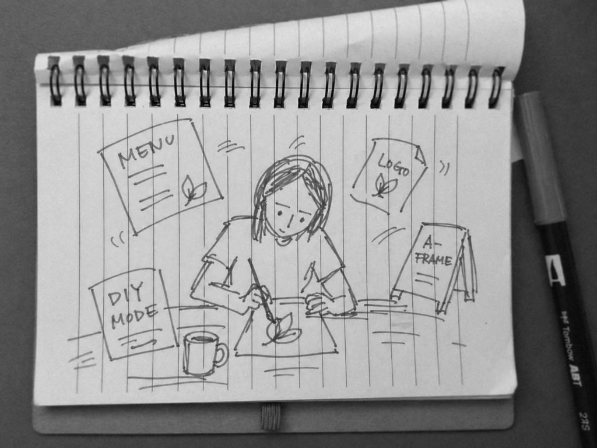
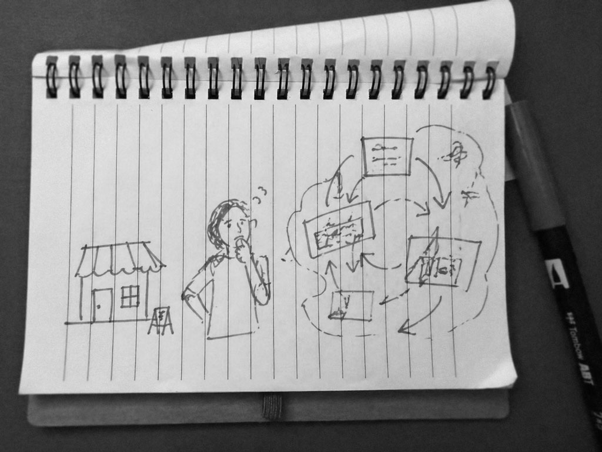

Why Businesses Are Often Afraid of Designers
Notes on trust, risk, and practical design for growing businesses.
Small businesses are not usually afraid of design itself. They are afraid of the process around design.
They are afraid they will not be heard. That instead of a real solution, someone will bring them a beautiful presentation. That the conversation will quickly move into strategy, positioning, visual codes, and “taking the brand to the next level,” while the actual task stays somewhere on the side.
Make it clearer.
More convincing.
More accurate.
More visible.
More professional.
But without theatre.
This fear does not come from nowhere.
Many business owners already had an experience with an agency or a designer that left a bad aftertaste. The money was spent. The time was gone. The files were delivered. But the business did not become easier to understand, easier to sell, or easier to trust.
The logo became “more modern,” but people still do not understand what the company does.
The packaging became brighter, but on the shelf it looks cheaper than the products around it.
The website became prettier, but people still do not make it to the contact form.
The advertising became more “creative,” but it does not explain anything and does not sell.
And at some point the owner thinks: I will just do it myself.
Not because they think they are a designer. Because it feels safer.
They open Canva. Choose a font. Move the logo a little. Make a flyer, a menu, a banner, a post, a label, a sign. Yes, it is not perfect. Yes, something looks off. But at least it is fast, understandable, and does not come with the feeling that someone who does not really understand the business is now going to explain the business back to them.
There is logic in that.
Small business often lives under constant pressure. There is no extra month for “brand research.” There is no budget for a beautiful mistake. There is no internal team that can translate agency language into real life. There is a product, rent, employees, suppliers, customers, taxes, tiredness, and the need to keep moving.
So design starts to feel not like a tool, but like a risk.
The risk of paying for someone else’s taste.
The risk of getting something that looks nice but does not work.
The risk of losing control over something that is already held together by personal effort.
The risk of being surrounded by smart words and still not getting the thing you actually needed.
But the problem is that doing everything yourself also has a price.
It is just not always visible in accounting.
Nobody sends you an invoice for weak packaging.
For a bad product photo.
For a website that feels random.
For a menu that is hard to read.
For a sign nobody notices.
For a brand that looks different every time and never builds recognition.
But the business still pays for it.
It pays when people perceive it as cheaper than it actually is.
It pays when a good product does not create trust at first sight.
It pays when the customer has to guess instead of understand.
It pays when every new material has to be built from scratch because there is no system.
It pays when a competitor with a clearer visual language looks more professional, even if their product is not better.
Design cannot make a bad business good. But weak visual communication can easily make a good business look unclear, unfinished, or not serious enough.
Especially now, when people often meet a business for the first time through a screen. Through a photo. A product card. A website. A post. An ad. A package on the shelf. A sign they pass in three seconds.
At that moment, design is not decoration. It is the first form of trust.
And this is where the difference begins.
A business does not always need an agency. It does not always need a big process, a team of ten people, three months of research, and a hundred-slide presentation.
Very often it needs a careful professional partner who can look not only at the picture, but at the real task.
What needs to become clearer?
Where is trust being lost?
Why does the product look cheaper than it should?
What makes the website less convincing?
How can the brand stop falling apart every time something new is made?
Where does it need a system, and where does it simply need one precise correction?
Good design does not start with the desire to “make it beautiful.” It starts with attention to what already exists.
The character of the business.
Its scale.
Its limits.
Its market.
Its customers.
The things the owner already understands instinctively, but cannot always express visually.
A professional should not take the voice away from a business. A professional should help that voice become clearer.
Not force a foreign style onto it.
Not repackage everything until the living character disappears.
Not make it look “like a big brand” when there is no reason for that.
But find the form where the business becomes more collected, more understandable, and more convincing.
Sometimes this means a new logo. Sometimes it does not.

